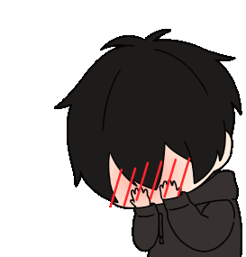

❤️
Okay since napindot mo ang "YES" pag bibigyan ko ikaw hahahaha
di char lang magayon nan kyut ka as always.. madako naman ulo
nasabihan lang magayon nan kyut. But anyways since adi ka na
nabasa mo na ang letter before ka makaabot dd sa website na hinimo ko
basta i made this website specifically para saimo because why not naman